밀리터리 잡담 (9/23)
게시: 2021-09-23T06:30:53+09:00
<과대망상의 일본 해군> 일본은 병사들의 밤 눈이 밝은 것으로도 유명했으나 불행히도 과대망상의 기질이 농후하여 정찰병으로서의 자질은 빵점. 1942년 5월 Coral Sea 해전에서도 일본 정찰기가 2만톤급 유조선 USS Neosho (AO-23)를 보고 '미해군 정규 항모 1척 발견!'이라고 호들갑. 두대의 일본 항모에서 총 78대의 함재기가 날아왔다가 허탕을 치고 이 불쌍한 유조선을 맹폭. 그런데 7방의 직격탄을 맞고도 침몰하지 않고 4일간이나 떠있다가 결국 승무원들은 미군 구축함에게 구조됨. 이때의 일본해군이 헛발질하는 덕분에 열세였던 미해군이 위기를 벗어나고 미드웨이에서 반격할 수 있었음. 뒤이어 레이테만 해전에서도 누가 봐도 조그맣고 귀여운 호위항모들을 보고 '미해군 정규 항모들의 대함대를 발견!'이라고 호들갑 떠는 바람에 야마토가 고폭탄 대신 철갑탄을 쏘았고, 그래서 장갑도 없는 호위항모의 얇은 함체를 철갑탄이 그냥 뚫고가는 바람에 의외로 피해가 적었다고... ** 사진1이 USS Neosho (AO-23). 사진2가 불타는 니어쇼. 어디가 항모처럼 보이는지?
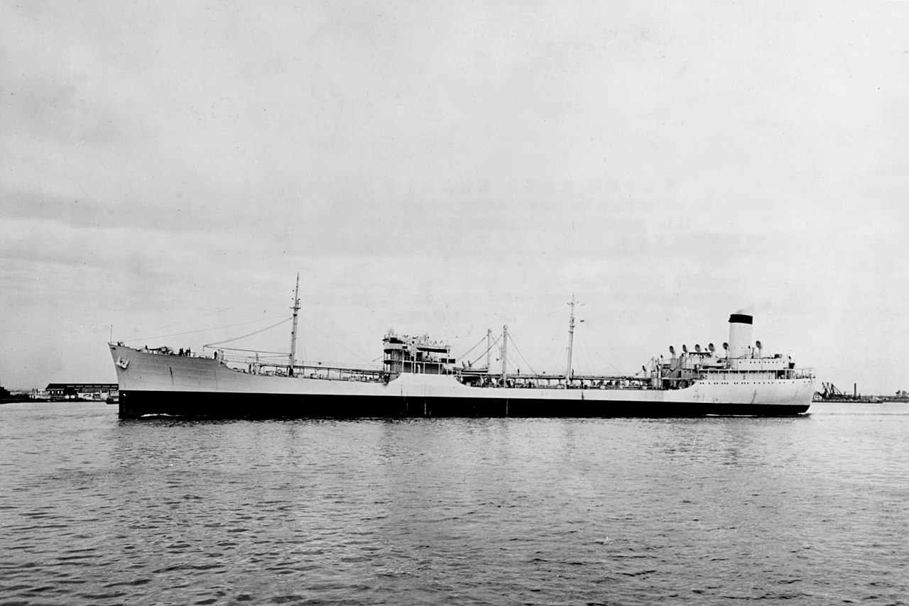 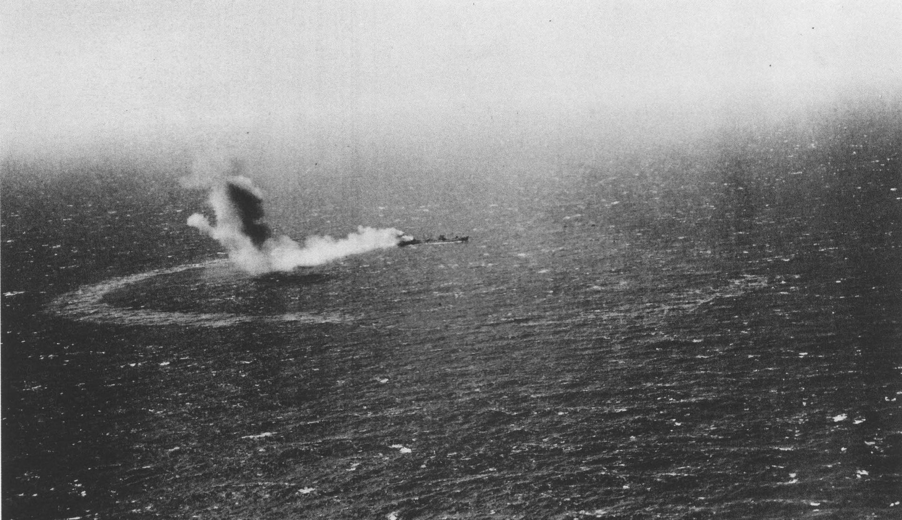
<전함의 포격 vs. 함재기 폭격> 1945년 7~8월, 일본 육해군 항공대가 저항 능력을 상살했다고 본 미영 해군은 항공모함 뿐만 아니라 전함들(미해군의 Iowa, Missouri, Wisconsin, North Carolina, Alabama, 로열 네이비의 HMS King George V 등등)을 일본 해안에 붙여 놓고 14인치~16인치 전함 주포로 해안가의 공업 시설, 특히 철강 제련소를 맹폭. 당연히 이 전함들은 인근 항모에서 출격한 함재기들의 항공 엄호를 받았음. 사진1 속에서 검은색 선은 항공모함의 공습을, 붉은색 선은 전함의 함포 공격을 표시. 일본이 항복한 후 미군이 피해 조사를 해본 결과 내린 결론은 전함의 포탄보다는 함재기들이 투하한 폭탄들이 더 큰 피해를 입혔으며, 포격하는 전함을 함재기 띄워서 엄호하느니 그냥 전함은 뒤로 빠지고 함재기들이 폭탄 뿌리는 것이 더 큰 피해를 입혔을 거라는 것. * 이런 전함 포격전으로 일본은 약 3천명의 사상자를 냈는데 미군도 32명의 사상자가 발생. 이유는 카마이시를 포격을 받은 카마이시에 미군 포로 수용소가 있었... * 사진2는 이와테현 카마이시를 포격 중인 USS Indiana (4만5천톤, 27노트).
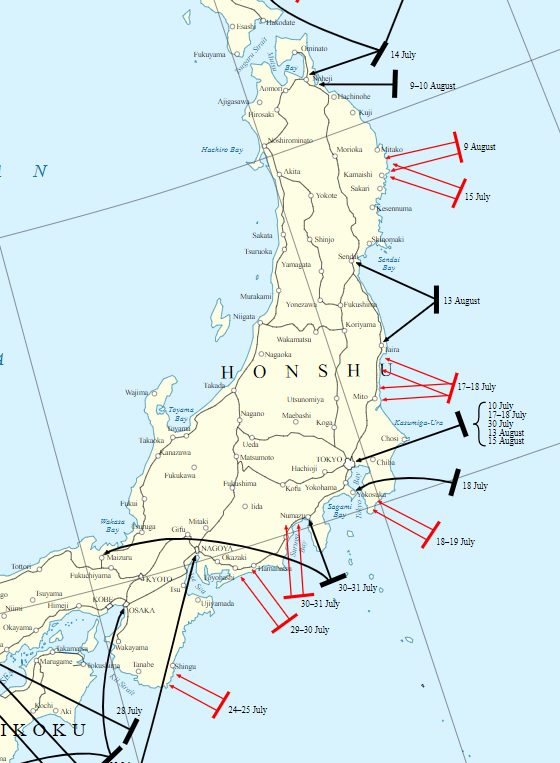 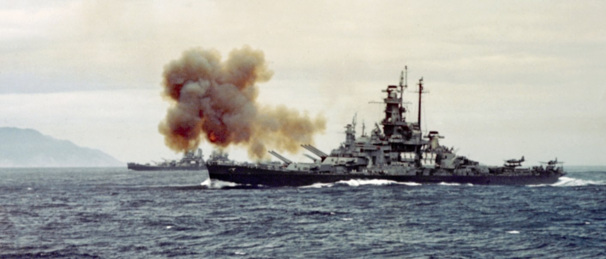
<나도 볼래> 사진은 1966년 지브랄타 서쪽 150마일 지점에서 USS Forrestal을 정탐하러 나온 쏘련 폭격기 Tu-95 Bear와 USS Forrestal에서 나온 F-4 전투기 및 A-3 공중급유기. 너무 위험할 정도로 서로 가까이 붙었는데 이건 적대적인 행동이 아니라 Bear를 좀 더 자세히 보려는 미해군 조종사들의 개인적 욕심 때문에 나온 장면. 저때 저 팬텀기의 조종사는 편대장급이었는데 대략 4~5시간 전에 북극해의 무르만스크에서 출격한 Tu-95가 정오 즈음에 포레스탈 위로 날아올 것이라는 정보를 받고 꼭 Tu-95를 직접 눈으로 보고 싶어 일부러 자신을 그 시간대의 비상 대기조 (소위 'Bear watch')에 넣었음. Bear가 예상대로 나타나 랑데부를 했는데, 저 사진이 찍힐 때 자신은 저 폭격기를 보느라 정신이 없어서 자신의 우측에 A-3 급유기가 저렇게 가까이 붙은지 몰랐다고 함. A-3가 저렇게 가까이 붙은 이유도 A-3 조종사가 Tu-95를 좀더 가까이 보고 싶어서... 팬텀기 조종사 말에 따르면 저렇게 가까이 가보니 Tu-95 후방에 있는 관측창에서 웬 소련 승무원이 커다란 구식 카메라를 삼각대 위에 올려놓고 열심히 쳐다보다 자신에게 뭔가 손짓을 열심히 하더라고. 가만 보니 사진빨이 잘 나오게 팬텀기의 위치를 이쪽으로 조금 옮겨달라는 요청. 그에 따라 순순히 옮겨주니 그 소련 승무원은 사진을 찍고는 자신에게 엄지손가락을 들어줌. 물론 팬텀기에서도 레이더 조작사가 열심히 Tu-95의 사진을 찍음. 이 팬텀기들의 에스코트를 받으며 Tu-95는 포레스탈까지 날아가서 저공비행까지 한 뒤 유유히 다시 무르만스크로 돌아감. 팬텀기들은 포레스탈에서 100마일 떨어질 때까지 배웅해줬는데, 헤어질 때는 소련 조종사가 산소마스크를 벗어서 씨익 웃는 모습을 보여주며 엄지손가락을 척. 아주 훈훈한 비행이었다고 회고.
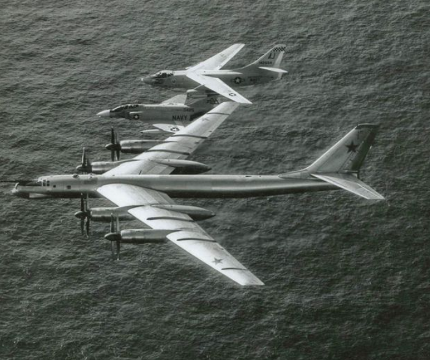
그런데 이 Tu-95 폭격기 이야기에서 좀 이상한 것 느끼지 않으셨는지? 콜라 반도에서 지브랄타 인근까지 날아오는데 약 6시간은 걸릴텐데 대체 그 먼 곳에서 미해군 항모가 어디 있는지 어떻게 탐지해서 날아오는 것일까?
요약하면 Tu-95 혼자서는 못 찾음. 당시 미해군 항모 뒤에는 소련이 운용하는 작은 민간 선박이 졸졸 따라다니면서 항모의 현재 위치를 계속 무전으로 보고했다고.
전쟁시에는 그럴 수 없으니 위성, 정찰기, 잠수함, 기타 모든 가능한 수단을 다 동원하는데 커다란 항모라지만 바다가 워낙 넓다보니 그다지 쉽지가 않음.
** 사진은 자신을 촬영하는 미군 조종사에게 V자를 그려보이는 소련 Tu-95 승무원.
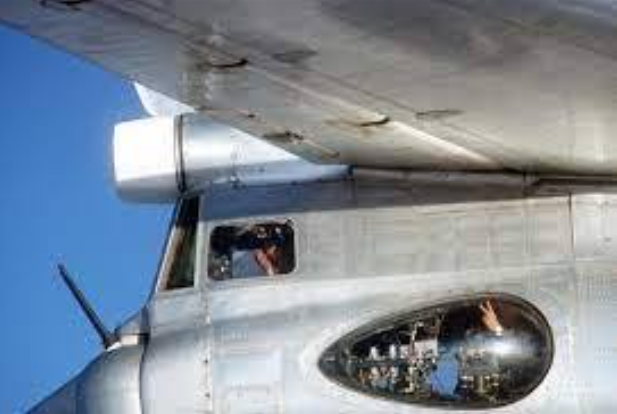
<수평선에 사람이 보인다면 그 사람과의 거리는?> 1940년 7월 지중해에서 벌어진 칼라브리아(Calabria) 해전에서 로열 네이비 전함 HMS Warspite는 이탈리아 전함 Giulio Cesare를 24km 떨어진 거리에서 15인치 포로 명중시킴. 이것이 움직이는 군함이 움직이는 군함을 인류 역사상 가장 먼 거리에서 맞춘 기록. 그러나 워스파이트의 거리측정기(rangefinder) 높이는 대략 30m. 그 높이에서 수평선까지의 거리는 고작 19km. 대체 어떻게 보이지도 않았을 24km 거리의 군함을 맞췄을까? 요약하면 줄리오 세자레의 높이 때문. 수면 위로 2m만 솟아도 그 끄트머리는 24km 밖에서 보였을텐데 줄리오 세자레의 마스트는 적어도 35m는 되었을테니 아마 38km 밖에서도 잘 보였을 거라고. ** 눈에 보이는 수평선까지의 거리는 높이에 따라서 정말 크게 차이가 남. 잠수한 상태에서 눈만 수면에 내놓고 보면 수평선까지의 거리는 정말 코 앞. 3cm만 더 높이 고개를 들면 600m까지 보이고, 키가 대략 180cm 정도 되는 사람이라서 눈 높이가 170cm 된다면, 수평선까지의 거리는 약 5km. 그러니까 수평선 너머에 서있는 키 180cm의 사람 머리 끝이 망원경에 보인다면 그 사람과의 거리는 10km인 셈. 참고로 광화문에서 서초역까지의 거리가 대략 10km. ** 사진1의 HMS Warspite의 단면도에서 10번 사격통제 레이더의 위치가 아마도 기존 광학 rangefinder의 위치. 워스파트에 레이더가 설치된 것은 1941년 이후라고.
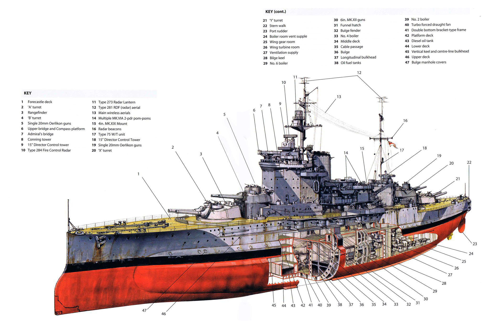 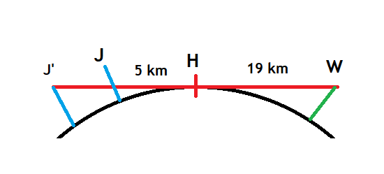
<재생 에너지 잠수함> 1921년 훈련 중이던 미해군 잠수함 USS R-14가 인근에서 사라진 예인선 탐색 활동을 너무 열심히 하다가 연료 고갈 및 무전 고장으로 표류 시작. 설상가상으로 식량도 5일치 밖에 없었음. 장소는 하와이 남동쪽 약 190km 지점. 누군가의 아이디어로 담요와 침대 시트를 이용해 라디오 안테나와 어뢰 탑재용 기중기 등에 돛을 달아 세움. 총 3장의 돛으로 2노트의 속도를 내는데 성공. 심지어 이를 이용해 배터리 충전도 함. 결국 64시간 만에 하와이에 도착.
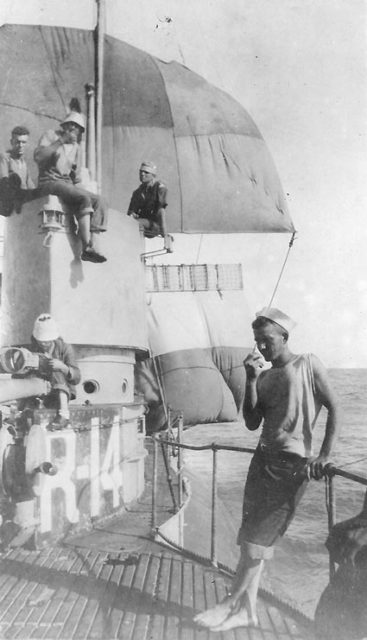
<별을 찾는 폭격기> 별을 보고 현재 위치를 게산하는 천문도법은 장거리 항해에서 필수적인 요소. 그러나 1998년부터 미해군 사관학교에서는 더 이상 celestial navigation을 가르치지 않음. 이유는 너무 어려운 과목인데 어차피 위성 항법 시대라는 것. (실제로 non-engineering 과목 중에서 가장 어렵다는 불평불만이 많았다고...) 1960년대까지만 해도 보잉 747에서도 조종석 꼭대기에 sextant port (육분의 구멍)이 있어서 그걸로 별을 보고 현재 위치를 계산. 그러나 아직 러시아의 Tu-95MS Bear-H 폭격기에는 자동화된 ANS-2009 celestial navigation system이 장착되어 있음. 열댓개의 대표적인 별들 중 하나에 이걸 고정시켜놓으면 현재 위치를 90m 이내의 오차로 자동 계산해준다고. (낮에도 사용 가능) 러시아가 아직도 이런 천문항법 장치를 쓰는 이유는 어떤 경우에도 jamming되지 않는다는 장점도 있으나 기본적으로는 업그레이드 노력이 부족하여... 사진1. 1960년대 보잉 747 조종석의 sextant port 사진2. 영국 폭격기 Victor의 Mk2C sextant 사용 장면 (1959년) 사진3. 육분의를 사용한 태양 고도 측정 방법
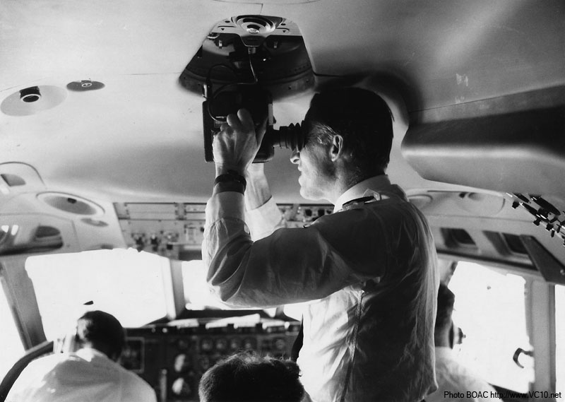 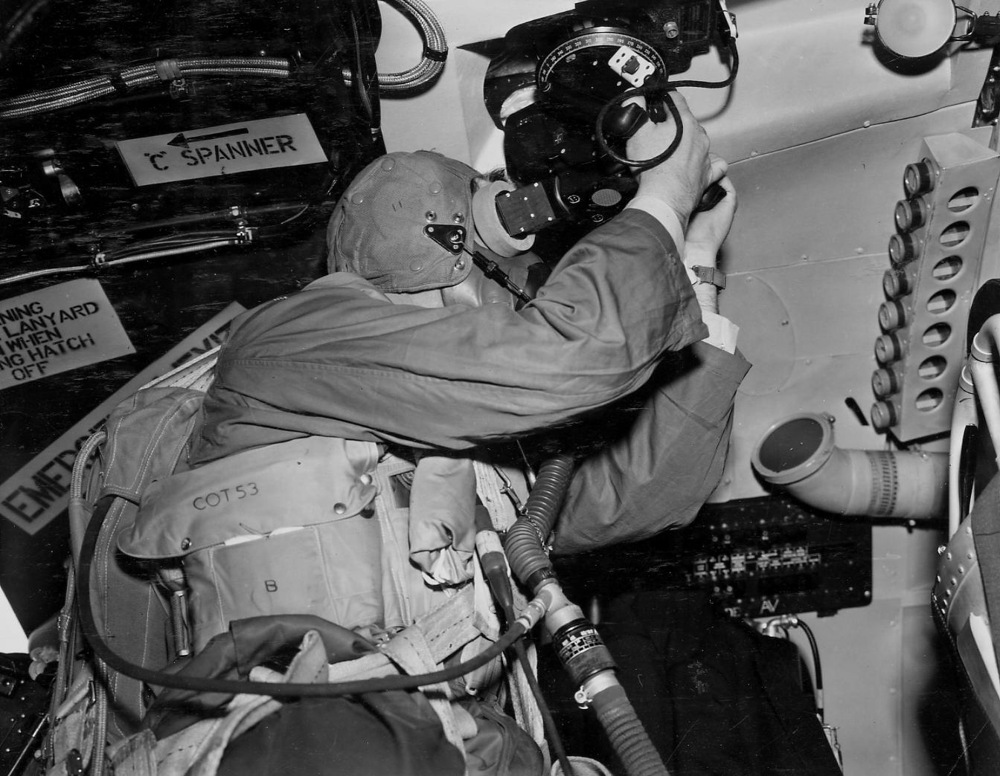 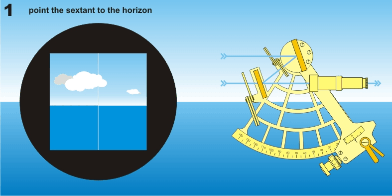
<밤에는 어떡할래?>
미해군 최초의 항공모함은 석탄선을 개조한 시험용이었고, 두번째가 USS Lexington(CV-2).
워낙 처음이다보니 이걸로 어떻게 작전을 해야할지 감이 안 잡힘. "혹시 밤이나 폭풍 속이라서 함재기를 못 띄우는 상황에서 적함을 만나면 어쩌지?" 라는 질문에 아무도 답을 못함.
그래서 2연장 8인치포 포탑을 무려 4개나 붙임. 결과적으로는 그냥 돈 낭비에 속력 저하...
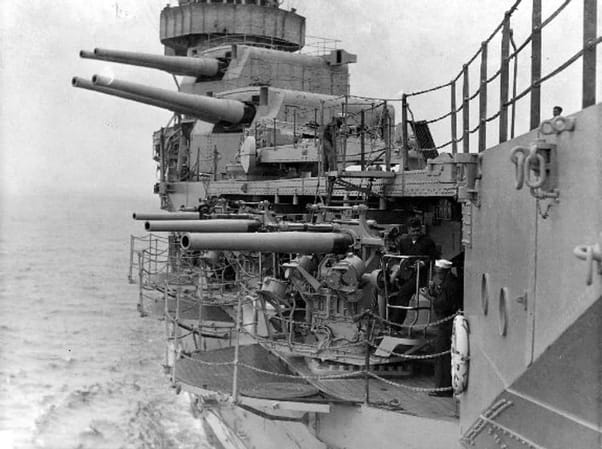
<최악의 기항지 하와이 호놀루루>
1924년 당시 Empire Cruise를 수행 중이던 HMS Hood가 하와이 호놀룰루에 기항한 모습. 세계를 누비고 돌아온 HMS Hood 승조원들에게 최악의 기항지가 어디였냐고 물어보니 대부분 '호놀룰루'를 꼽음. 이유는 당시 미국이 금주법 시행 중이라서 시내에 나가도 술이 없...
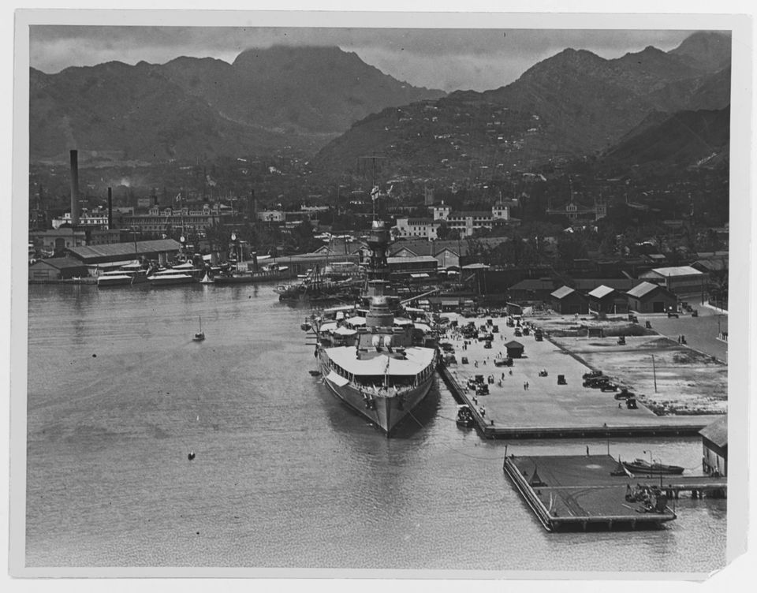
<아침 6시 육해공군 및 해병의 모습>
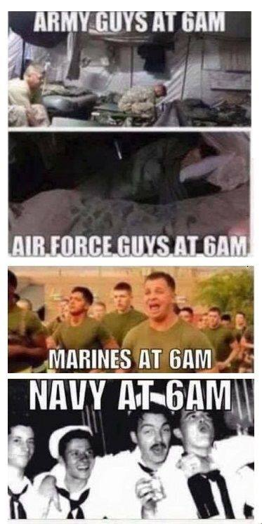
<육해공군 및 해병이 지뢰를 피하는 방법>
* 미해병대는 의외로 매우 가난함 (진짜임). 해병 정신 강조하는 이유가 다 있음.
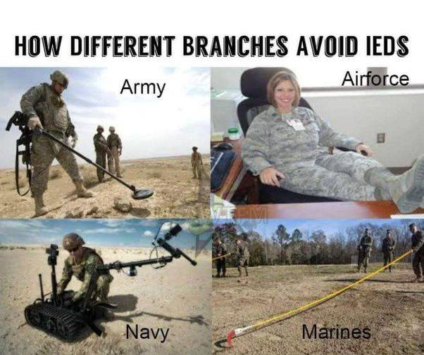